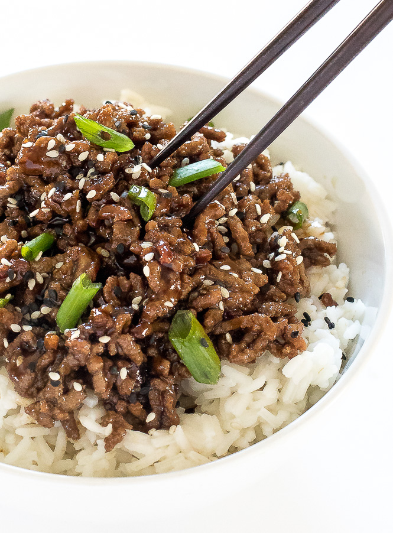

Korean Bulgogi Bowl

Description:
If you love Korean food, you have to try this amazing twist on bulgogi beef! Bulgogi is usually made with thinly shaved slices of beef, marinated and flame licked. This dish, on the other hand, has the delicious taste you know and love, but is made with ground beef and served as a rice bowl. The whole recipe is anxiety-free and takes just a few minutes. Your kids and friends will love this healthier dinner, and you will feel like you're on the streets of Seoul.
Ingredients:
- 1 pound lean ground beef
- 1 tablespoon sesame oil
- ¼ cup brown sugar
- ¼ cup soy sauce
- ¼ cup water
½ Asian pear, grated- 5 cloves garlic, minced, or more to taste
- 1 inch piece ginger, peeled and diced
- 1 teaspoon red pepper flakes
- ½ teaspoon ground black pepper
- 1 cup cooked brown rice, or more to taste
- 1 head romaine lettuce, chopped, or to taste
- 1 cucumber, diced
- 1 red bell pepper, diced, or to taste (Optional)
- 1 tablespoon sesame seeds, or to taste (Optional)
Instructions